Personal Website
《個人照片》
姓名：蘇逸軒
興趣：看小說、料理、打羽球
個人特質：隨和
Slogan：“知識唯一的來源是經驗”--愛因斯坦
《SFLPT外語檢定》
在高中時，第二外語是我們的必修科目，在高二上大家會一起報考SFLPT外語檢定。我選的第二外語是法文，除了必的課程之外，還有選修法文聽力，課程中老師比較注重在數字的部分，因為法文的數字是透過相加所組成的，例如：99=4*20+10+9。經過練習，讓我在聽電話號碼時更得心應手。
其中最有趣的就是，大家在準備考檢定時，一起討論問題分享筆記，透過彼此分享可以學習到更多自己可能忽略的部分，最終我和朋友們都順利拿到證書。
《管理學--心路基金會》
大一下管理學的課程安排是讓我們自己去聯絡志工服務地點並完成一次志工服務，期末成果發表。我們這次選擇的是新竹的心路基金會，在那裡的小朋友都是有身心障礙，對於第一次接觸這些小朋友有點不知所措，但是在老師的帶領下馬上可以了解小朋友的習慣。老師有說，雖然小朋友大多是沒辦法開口說話，但是可以觀察他們細微的表情變化或肢體動作得知他們現在的心情。
總體來說，雖然當天身體很疲倦，但是還是很開心的認識到不同群體的人學習到新的事物，看到小朋友的反饋還是很有成就感的。
《通識--從聖經中看人生》
這是一場外語自學的活動，由一群從新加坡來的隊輔負責帶領活動。活動一開始先玩破冰遊戲，每人一張紙找在場有相同內容的人圈起來連線，透過這個破冰讓原本完全不認識的組員，可以聊上一兩句。接著討論一些白板上的題目，經過這個活動更了解彼此，也認識了更多朋友。
《一拍即合球社》
在高中時參加合球社，在社課期間教練除了教我們基本規則外，還告訴我們一些戰術並讓我們實際練習，就像左邊影片中的樣子。
合球這個運動是非常需要與隊友互相合作，所以非常重視對戰術的理解以及溝通技巧，因此在這過程中社員彼此更加熟悉。